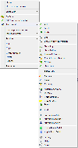

Robot is a fork of the androidscreencast project. Robot aims to view the screen and remote control android devices from desktop.
View the Project on GitHub DevHouse-BR/Robot


09 May 2012
Git GUIs
por Leonardo Lima de Vasconcellos
Para quem não está acostumado com o uso do git em linha de comando (o git é uma ferramente inicialmente feita para ser usada em shell), fizemos uma pesquisa para encontrar possíveis GUIs, ou Graphical User Interface, para facilitar o uso do git. Encontramos algumas alternativas que são inumeradas a seguir:
1. TortoiseGit
O TortoiseGit é o port do já famoso TortoiseSVN para o Git. Com seu funcionamento integrado ao shell do windows ele permite uma facil manipulação dos recursos do git através do menu de contexto windows explorer (botão direito do mouse). Com ele você facilmente faz operações como git clone, git init, git push, git pull, git add, etc. Além disso possui ferramenta para fazer merge de arquivos facilitando muito esta tarefa. Você pode baixar a última versão neste link.
2. SourceTree
SourceTree é um cliente Git free para Mac OS X desenvolvido pela Atlassian, a empresa por trás do poderoso Jira. Ele oferece suporte a outros servidores de repositórios como Bitbuckuet e Kiln e tem toda a facilidade de uso como uma boa interface Mac exige. Você pode fazer o download do SourceTree neste link.
3. RabbitVCS


{kind=link}
Instruções de instalação no Ubuntu
Karmic e posteriores
{% highlight bash %} $ sudo add-apt-repository ppa:rabbitvcs/ppa {% endhighlight %}Hardy, Intrepid e Jaunty
{% highlight bash %} $ deb http://ppa.launchpad.net/rabbitvcs/ppa/ubuntu *DISTRO* main {% endhighlight %}Instalação
{% highlight bash %} $ sudo apt-get update $ sudo apt-get install «pacotes» {% endhighlight %}... os pacotes são:
- rabbitvcs-nautilus3 para a extensão do Nautilus 3.x (use com Ubuntu 11.10 ou maiores)
- rabbitvcs-nautilus para a extensão do Nautilus 2.x
- rabbitvcs-thunar para a extensão do Thunar
- rabbitvcs-gedit para a extensão do GEdit
- rabbitvcs-cli para linha de comando
- @llvasconcellos, a veteren web developer who is always looking for better technologies to create rich internet applications.
- @CamilaRamos, a girl with greate tech skills. We sure need that!
- @junirbastos, This guy knows how to make a really good websites.
09 May 2012
Conta no GitHub
por Leonardo Lima de Vasconcellos
 Para fazer o gerênciamento do código fonte deste projeto e controle de versão utilizaremos o Git, que é hoje um dos mais utilizados para projetos de software OpenSource.
Para fazer o gerênciamento do código fonte deste projeto e controle de versão utilizaremos o Git, que é hoje um dos mais utilizados para projetos de software OpenSource.
Git é um sistema de controle de versão distribuído com ênfase em velocidade. O Git foi inicialmente projetado e desenvolvido por Linus Torvalds para o desenvolvimento do kernel Linux. Cada diretório de trabalho Git é um repositório com todos os históricos e habilidade total de controle das revisões, não dependente de acesso a uma rede ou a um servidor central.
http://pt.wikipedia.org/wiki/Git
 Então, resumindo, o git é o sistema de controle de versão (VCS) que será utilizado mas e o servidor que vai hospedar este serviço? Para isso escolhemos o GitHub pois oferece todos os recursos necessários e é gratuito para uso em projetos opensource. Com o github não só gerenciamos o código mas também é possível gerenciar a comunicação entre a equipe e hospedar páginas relacionadas ao projeto como este blog que você está lendo agora. :)
Então, resumindo, o git é o sistema de controle de versão (VCS) que será utilizado mas e o servidor que vai hospedar este serviço? Para isso escolhemos o GitHub pois oferece todos os recursos necessários e é gratuito para uso em projetos opensource. Com o github não só gerenciamos o código mas também é possível gerenciar a comunicação entre a equipe e hospedar páginas relacionadas ao projeto como este blog que você está lendo agora. :)
Para se cadastrar no github clique aqui e preencha o formulário. Após o preenchimento você será direcionado para a página inicial do github onde haverá um quadro intitulado "GitHub Bootcamp". No quadro, clique em "Set Up Git" para instruções de instalação do cliente git para a sua plataforma. Há opções para Linux, Windows e MacOSX.
Deve-se seguir as instruções com atenção, principalente a parte de criação de chave de segurança pois é um item imprescindível para o funcionamento do git com o github.
09 May 2012
Development Team
por Leonardo Lima de Vasconcellos
We are proud to present our current development team: